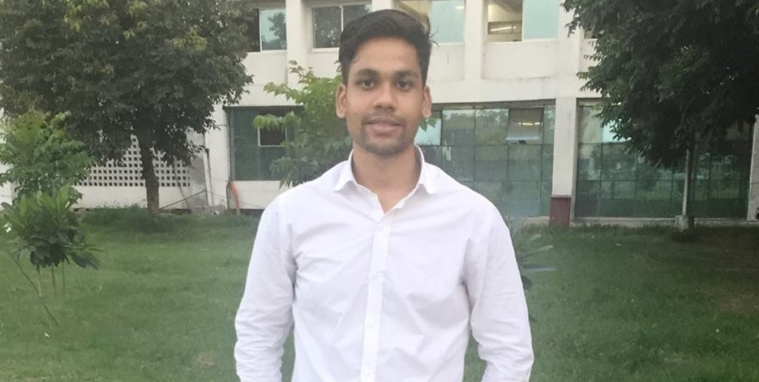

Bipin Bhartola
The man who did Mechanical Engineering and then did IT, smh

Photo of the dude famously known as Bipin
Here's is a timeline of Bipin's life:
- 1994 - Born in Satwari, Jammu
- 1995 - Family moves to Pathankot, Punjab. There he completes his elementary education and studies upto class 4
- 2002 - Family again relocates to Ferozepur, within the same state. Here is studies from grade 5 to grade 8
- 2006 - Relocates to Jammu. Completes matriculation. This is the second time he has been in Jammu
- 2012 - Completes High School. Drops a year to prepare for IIT's, becaue he wanted to go to the best college and get the best education the is
- 2013 - Did not clear JEE advanced. Joins Punjabi University Patiala to pursue Bachelor's of Technology in Mechanical Engineering
- 2017 - Completes his degree. Gets a job offer from Infosys Ltd. to work as a Systems Engineer. Gets transferred to Mysore the same year to join their training
- 2019 - Leaves Infosys because of too many technology changes and below average quality of work. Joins Coaction
- 2021 - Moves to Europe to pursue Masters in Computer Sciences
- 2022 - Completes Masters and takes a job in Germany. Works to visualize data using Machine Learning and Artificial Intelligence
- 2024 - Comes back to India.
"Bad decisions make good stories."
--literally me every day
If you want to read more about this incredible human being, visit link .